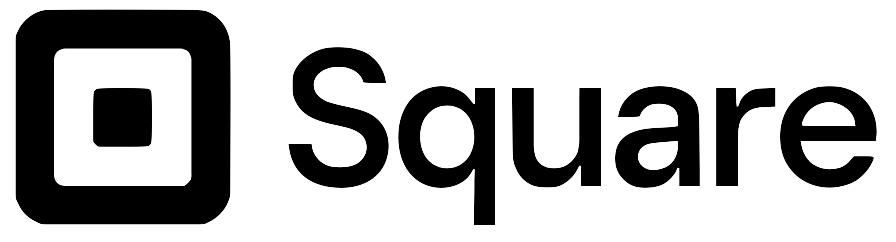

Electrical Engineering Intern
- Designed PCB using Altium to monitor battery power for 2nd generation Square reader
- Made both the schematic and layout
- Developed prototypes with evaluation boards and LTspice simulations as a proof of concept
- Provide early-version coding framework for an on-board STM32 chip that reads from the power sensor and logs information into an SD Card
- Implemented on-board discharging module for analyzing battery behavior in low power mode
Optical Engineering Intern/Assistant
- Summer intern and part time assistant during 2022-2023 school year
- Fronted projects for development of automation tools for validation of optical hardware and equipment
- Wrote Python scripts to remotely access device under test and collect information needed for qualifications
- Presented automation framework to VP of Hardware Engineering leading to the mandate on hardware automation
- Made models in Python for analyzing optical signal attenuation and its consequencs on communication
Hardware Instructor
- Startup workspace that offers resources and mentorship for growing businesses
- Build circuit prototypes and coding framework for systems that require embedded programming
- Design PCBs for early-version testing for fieldwork
- Two projects I've worked on are remote controlled electrical panels for apartments, and eletrical interface for biochemical tests